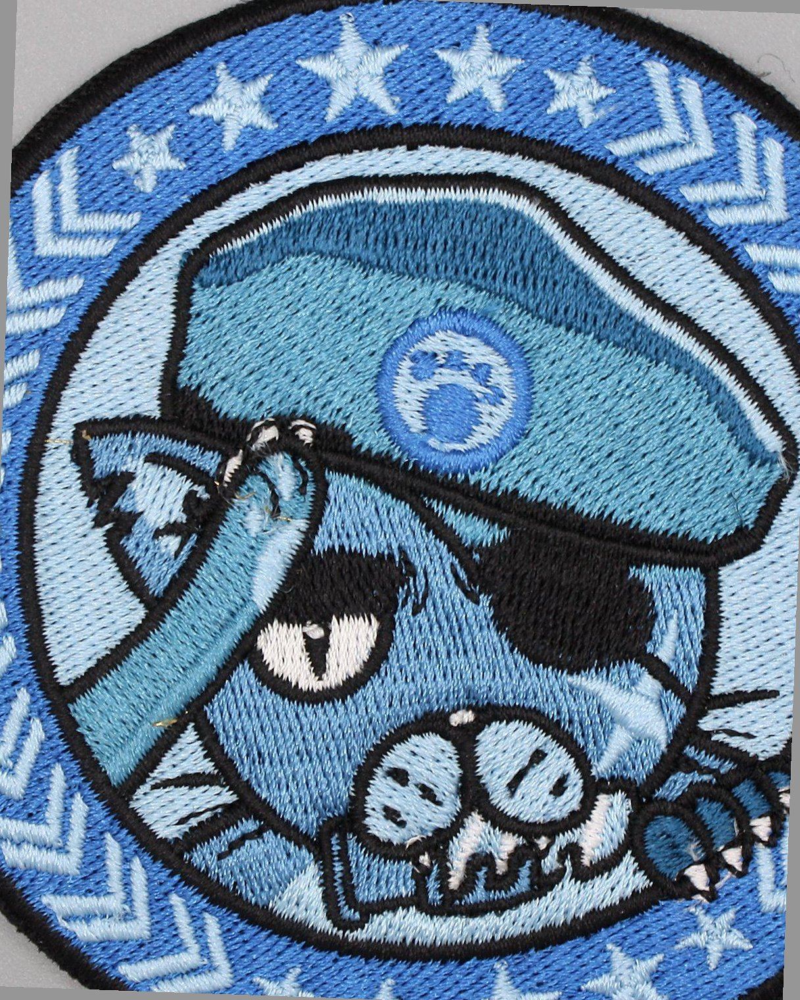
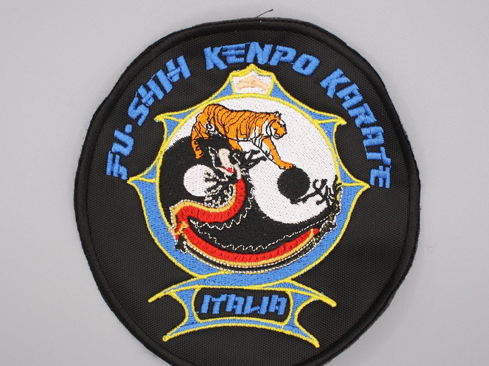
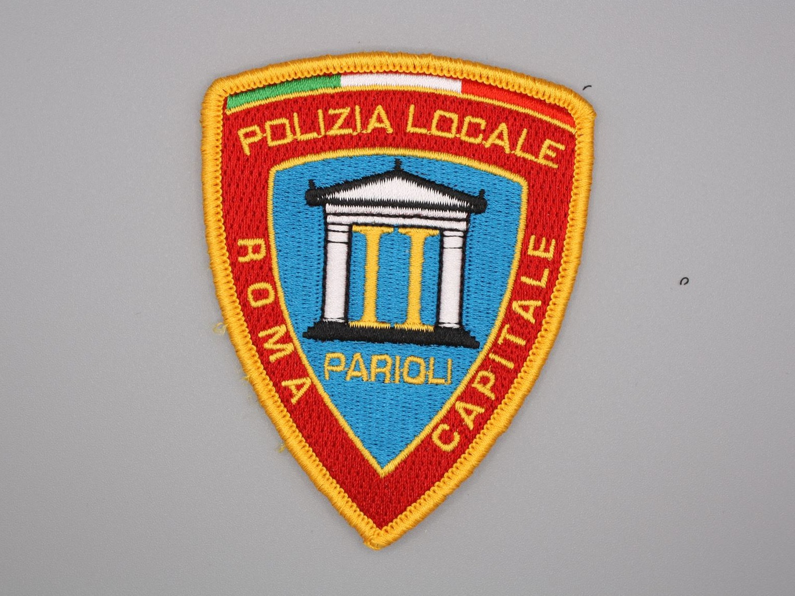
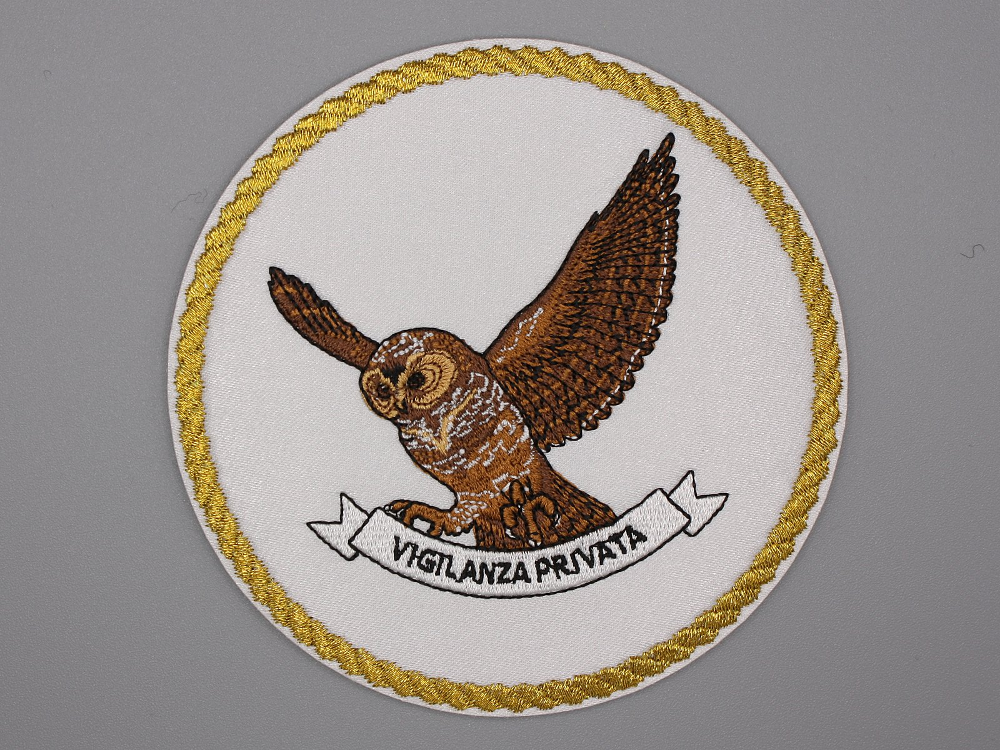
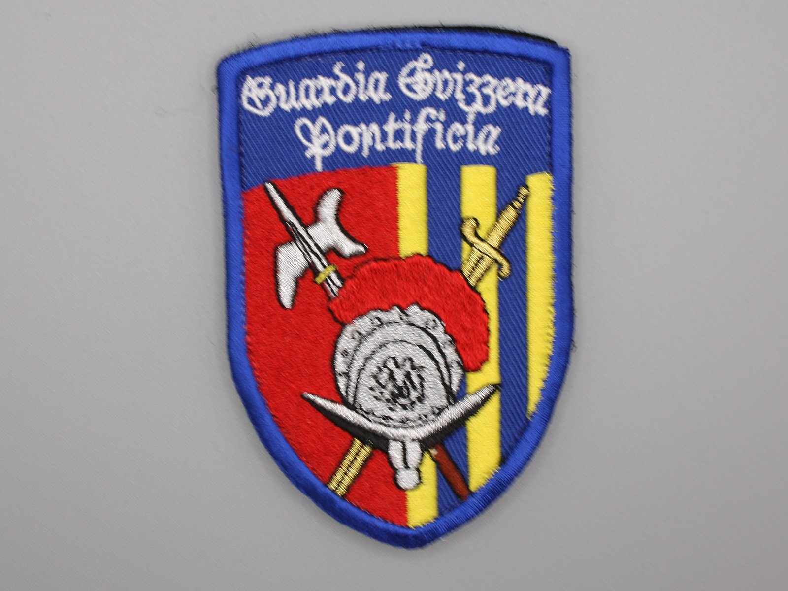
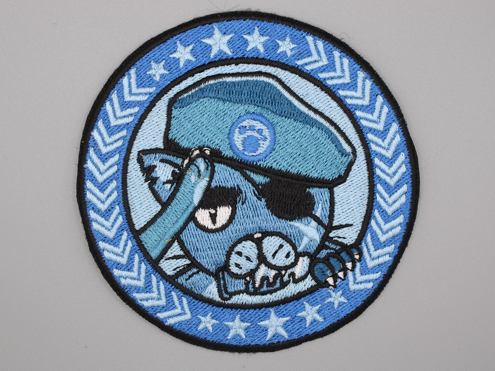

Embroidered patches designed to last
When a patch needs to represent a unit, an association, a business or an organised group, every detail counts: design, threads, border, backing and the ability to reorder.
- High-density embroidery, three-dimensional effect
- Polyester thread resistant to washing and light
- Machine file archived for future reorders

What is an embroidered patch
An embroidered patch is a piece of fabric — a twill or felt base — on which an embroidery machine guides the thread stitch by stitch, following a digital file. The result is a three-dimensional image with a physical texture that fabric prints don't have.
The key step is digitising: converting the logo into a machine file. It determines stitch density, embroidery direction and how colour transitions are handled. A well-made file lasts forever, and makes every future reorder identical to the original.
The border is part of the patch, not an accessory. The merrowed border is the cord that runs around the perimeter: it works well on simple shapes. Laser cutting handles more intricate shapes. Both finishes are produced by a selected external supplier: they generally become cost-effective from around 200 pieces, while for smaller quantities we assess the most sensible solution case by case.
- BaseTwill (more precise) or felt (softer)
- ThreadPolyester; alternative threads for specific aesthetic requirements
- BorderMerrowed (simple shapes) or laser-cut (complex shapes)
- BackingSew-on, iron-on or hook-and-loop (hook side)
- Minimum detailLetters generally legible from 4–5 mm in height, depending on font and background

When to choose an embroidered patch
Embroidery is the right choice when the logo has solid colours, the size is sufficient, and an institutional or crafted look is part of the message.
Institutional crests and logos
Embroidery is the traditional technique for official badges, rank insignia and emblems. The three-dimensional effect gives the logo a visual and physical weight that a print doesn't have. Suited to uniforms, caps and ceremonial jackets.
Associations and scout groups
Association badges need to be instantly recognisable and withstand frequent washing. Polyester thread holds up well through washing machine cycles. Quantities are often modest, but the design must be reproducible identically over time.
Uniforms and professional clothing
Sewn onto a work uniform, an embroidered patch lasts a long time without losing colour or shape. Suited to intensive use with frequent washing, and more durable than a direct print.
Motorcycle clubs and organised groups
Patches on vests require precise borders and solid colours. Classic embroidery — whites, blacks and primary colours — holds up well. For frequent exposure to water or weather, consider the PVC patch as an alternative.
Reorders over time
A growing organisation reorders the same patch years later. Embroidery is the most faithful technique for reorders, provided the original machine file (digitising) has been kept. We archive it at the end of every project.
When embroidery isn't the right choice
Embroidery has precise technical limits. Knowing them before ordering avoids disappointment and waste. In these five cases, technically more suitable alternatives exist.
Very small text
As a cautious rule of thumb, embroidered letters below 4–5 mm in height tend to lose definition. A lot depends on the font, stroke thickness and background: on a clean background with linear characters, more compact solutions can be considered. For very small text, the Woven HD patch keeps text legible even at reduced sizes.
Very fine graphic details
Shading, gradients, sub-millimetre lines, realistic faces: embroidery doesn't reproduce these faithfully. For fine lines and text, Woven HD is often the right choice; for photographic graphics or rich shading, consider the sublimated patch.
Extreme outdoor use
Thread absorbs moisture and — under prolonged exposure to water, UV rays and abrasion — tends to lose colour before PVC does. For harsh conditions or intensive tactical use, the PVC patch is more suitable.
A modern or rubberised look
If the required aesthetic is flat, glossy or has a rubberised texture, PVC delivers the right finish. Embroidery always has a crafted, "warm" character that doesn't suit every graphic project.
Large quantities with fine definition
For very large orders where the priority is fine definition on logos with many colours and subtle details, Woven HD can offer greater batch-to-batch consistency than embroidery.
Already know exactly what you need? Send us your logo, dimensions and quantity.
Request a quoteHow an embroidered patch is made
From artwork to finished embroidery, every step influences the result. This is the standard path for every project.
-
01
Artwork analysis
We receive the logo and assess dimensions, number of colours, fine details and border shape. If the file has issues — text too small, shading — we flag them before starting the work.
-
02
Technical choice
We define the base, border, backing and support together. There's no standard configuration: it depends on the use, the quantity and the fabric the patch will be applied to.
-
03
Digitising
The logo is converted into a machine file. It determines stitch density, embroidery direction and colour handling. A well-made file lasts forever and enables faithful reorders over time.
-
04
Physical sample
Before batch production, we make a sample. We share it for approval: colours, border, dimensions, legibility. Production only starts once you've given the go-ahead.
-
05
Batch production
The machine embroiders onto the cut base, colour by colour. Speed depends on stitch density and the number of colours. Every batch is monitored during production.
-
06
Quality control
Every patch is checked before delivery: border, loose threads, colour match against the approved sample. Any issues are corrected before the batch ships.
-
07
Project archiving
The machine file, colours, measurements and notes are archived. When a reorder is needed — a month or three years later — we start from here, not from scratch.
Details that make the difference
An embroidered patch is the sum of many technical choices. Each one matters, even the ones that aren't obvious at first glance.
Threads
Our standard thread is polyester: good wash resistance, colour stability and reliability on frequently used uniforms and garments, with good sheen and guaranteed continuity for reorders. Alternative threads can be considered for specific aesthetic requirements.
Embroidery density
Too much density makes the patch stiff. Too little lets the base show through. The correct density is calibrated during digitising based on the size and the base used.
Border
The merrowed border suits simple shapes: circles, ovals, rectangles with rounded corners. Laser cutting handles more complex shapes. Both are produced by a selected external supplier and generally become cost-effective from around 200 pieces; below that threshold, we assess case by case.
Backing
The backing determines how the patch is applied. It must be chosen before production: changing it afterwards requires extra work. Raw cotton for sewing, resin for iron-on, hook-and-loop (hook side) for quick changes.
Hook-and-loop
The hook side on the back of the patch requires the matching loop side on the garment. If the garment isn't already fitted with it, the loop panel needs to be applied separately. This must be planned before ordering. Learn more about hook-and-loop patches.
Dimensions
The minimum size for a logo with legible embroidered text is around 50×30 mm. Below this threshold, detail tends to degrade. The patch's dimensions affect cost, detail and weight on the fabric.
Clean artwork files
A vector file (AI, EPS, SVG) with defined colours and outlined text is the basis for a precise machine file. Low-resolution raster files extend lead times and increase the risk of errors during digitising.
Number of colours
Every colour change requires a step in production. Logos with 3–5 colours translate better into embroidery, reducing lead times and costs compared to logos with heavy shading or colour transitions.
Backing types
The backing determines how the patch is applied to the garment. It must be chosen before production: each option has different characteristics, advantages and limits.
Sew-on
Raw cotton backing. Sewn onto the garment by hand or machine. It's the most durable backing over time: recommended for everyday uniforms and frequently washed garments.
Iron-on
The iron-on backing is applied with heat, using a press or an iron. It's available subject to project assessment: the result depends on the fabric, the applicable temperature and the conditions of use. On technical or heat-sensitive fabrics, sewing remains the most reliable choice. Learn more about iron-on patches.
Hook-and-loop (hook side)
Only the hook side is applied to the back of the patch. Anchoring it to the garment requires a separately sewn loop panel. Used for interchangeable patches: rank badges on operational uniforms, quick customisation.
Hook and loop included
The patch is supplied with both components: the hook side on the back and a loop panel to apply to the garment. Useful for complete orders that include both the patch and its anchor point.
Four things to know before you choose
Technical information to help you avoid the most common mistakes when choosing and ordering an embroidered patch.
An embroidered patch isn't always the best choice
There are cases where woven, PVC or fabric printing are technically more suitable. Embroidery makes sense when the logo is a good fit: solid colours, sufficient size, non-extreme use.
A merrowed border doesn't suit every shape
The merrowed border works well on simple shapes. On irregular, angular or very complex shapes, laser cutting produces a cleaner result. The shape of the logo determines the correct border, not the other way round.
Hook-and-loop should be chosen based on real-world use
The hook side on the back of the patch doesn't work on its own: it always requires a matching loop side on the garment. If the garment isn't already fitted with it, hook-and-loop can't be used without extra work on the fabric.
A good archive makes reordering simpler
If the machine file, colours and approved sample are kept on file, a future reorder can start within a few days. If they don't exist, you start again from scratch, with the costs and lead time of a first order.
Completed work
Examples of embroidered patches made for organisations, associations and businesses. The photos show the real result, not a rendering.






Answers to the most common questions
The questions we hear most often before an order. If yours isn't here, get in touch directly.
-
How much does an embroidered patch cost?
The cost depends on size, number of colours, quantity and backing type. A 30 mm patch and a 100 mm patch with 8 colours have very different costs. There's no fixed price list: every project is assessed individually. For a concrete estimate, send us your logo, approximate dimensions and quantity.
-
What's the minimum order quantity?
The minimum depends on the technique and the complexity of the logo. For embroidery, digitising is a fixed setup cost that has a greater impact on small quantities. Send us your project details so we can assess feasibility and the minimum that applies to your specific case.
-
Embroidered patch or Woven HD — which is better?
It depends on the logo. If the logo has solid colours, simple shapes and is larger than 50 mm, embroidery is generally the right choice for a three-dimensional effect and an institutional look. If the logo has fine details, small text or many colours, the Woven HD patch stays closer to the original artwork. For photographic graphics and short runs, the sublimated patch can also be worth considering.
-
Can hook-and-loop be applied to an embroidered patch?
Yes. The hook side can be integrated during production (the preferred solution) or applied afterwards by sewing or with a specific adhesive. The hook side alone isn't enough: it always requires a matching loop panel on the garment the patch will be applied to.
-
Can it be made with iron-on backing?
Yes, subject to project assessment. The iron-on backing is applied with a heat press or an iron, when heat application is compatible with the garment's fabric. It's not suitable for every fabric: on technical, heat-sensitive or treated materials, sewing is more stable over time. You'll find more details on the dedicated iron-on patches page.
-
How long does it take from request to delivery?
Lead times depend on complexity and quantity. As a general guide: from order confirmation, digitising and the sample take a few working days. Batch production depends on the quantity ordered. Precise timings are communicated before the project starts.
-
Can I reorder the same patch in future?
Yes. We archive the machine file, colours and specifications for every project. A reorder can take place months or years later with the same fidelity as the original order. If you've previously worked with another supplier who didn't keep the files, we can redesign the patch starting from your artwork.
-
What do you need to provide a quote?
A vector logo (AI, EPS, SVG) or a high-resolution file, approximate patch dimensions (width × height in mm), quantity, intended backing type (sew-on, iron-on, hook-and-loop) and an approximate date of use. With these details, you can receive an accurate technical and cost estimate.
Have a patch to make?
Send us your artwork, quantity, dimensions, required backing and date of use. We'll help you work out whether an embroidered patch is the right solution — and if it isn't, which alternative best suits your project.
Request a quote